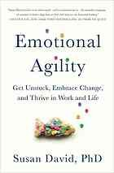
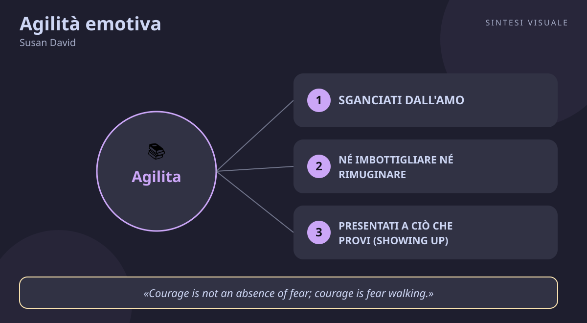

Home / Libri / Agilità emotiva

Agilità emotiva
Susan David · Emozioni e resilienza
«Agilità emotiva»
- Sganciarsi dagli ami
- Mostrati e osserva
- Vivi i tuoi valori
- Piccoli ritocchi
🧭Introduzione
Susan David è una psicologa sudafricana, docente alla Harvard Medical School e cofondatrice dell'Institute of Coaching al McLean Hospital. Ha studiato per oltre vent'anni emozioni, felicità e successo, lavorando con dirigenti di centinaia di grandi organizzazioni, dalle Nazioni Unite al World Economic Forum. La domanda che la tormenta è nata da un lutto personale: perse il padre da adolescente, in un Sudafrica segnato dall'apartheid, e capì che il modo in cui trattiamo il nostro mondo interiore decide molto più del quoziente intellettivo o del talento. Nel 2013 il suo articolo sulla Harvard Business Review fu eletto "idea di management dell'anno"; nel 2016 lo ha trasformato in questo libro, bestseller del Wall Street Journal e vincitore del Thinkers50 Breakthrough Idea Award (in italiano Agilità emotiva: Non restare bloccato, accogli il cambiamento e prospera nella vita e nel lavoro).
Perché conta oggi: viviamo sommersi da notifiche, giudizi social e incertezza sul lavoro, e la ricetta dominante è la positività tossica — "sorridi, pensa positivo, non lamentarti". Questo libro smonta l'idea che per stare bene si debbano eliminare le emozioni difficili: mostra invece che rabbia, paura, tristezza e vergogna sono dati preziosi, se impariamo a maneggiarli con agilità invece di farci trascinare.
A chi è utile: a chi si ritrova a rimuginare la notte sullo stesso errore, a chi esplode e poi si pente, a manager, genitori e insegnanti che vogliono gestire stress e conflitti senza fingere che tutto vada bene, e a chiunque voglia prendere decisioni fedeli a ciò che conta davvero.
📘Riassunto
La scintilla centrale: non sono l'intelligenza, la creatività o il carattere a decidere il successo nella vita e nel lavoro, ma il modo in cui navighiamo nel nostro mondo interiore — pensieri, emozioni e dialoghi con noi stessi: se li subiamo restiamo impigliati, se li trattiamo con agilità diventano una bussola.
La struttura logica procede in tre movimenti:
- Impigliati (hooked) — il cervello trasforma miliardi di stimoli in storie ("sono io la causa del divorzio dei miei", "se perdo questo cliente è colpa di Mario"). Da queste storie nascono gli "ami": dubbi, vergogna, paura, rabbia o idee superate che scattano in automatico. David descrive i quattro ami più comuni (dare la colpa ai pensieri, la mente-scimmia che salta di preoccupazione in preoccupazione, le idee vecchie mai aggiornate, la giustizia a tutti i costi) e le due false vie d'uscita: imbottigliare (bottling) le emozioni fino a esplodere, o rimuginarle (brooding) fino a esaurirsi.
- I quattro passi per sganciarsi — il cuore del libro, fondato sulla Acceptance and Commitment Therapy di Steven Hayes: Showing up (presentarsi alle emozioni con curiosità e gentilezza invece di combatterle), Stepping out (prendere distanza e osservare pensieri ed emozioni per quello che sono: solo pensieri, solo emozioni), Walking your why (usare i valori profondi come bussola per decidere) e Moving on (avanzare con piccoli ritocchi intenzionali su mentalità, motivazione e abitudini).
- Agilità al lavoro e con i figli — come portare lo stesso metodo nei team (meno retraibilità emotiva, più sicurezza psicologica) e nell'educazione dei bambini, aiutandoli a nominare ciò che provano invece di zittirli con un "non piangere, sii felice".
Il punto di svolta: il capitolo sui valori. Quando il lettore capisce che i valori riguardano la qualità dell'agire, non la quantità del tempo — puoi amare profondamente tuo figlio anche se passi poche ore con lui, se quelle ore incarnano ciò che conta — il senso di colpa si scioglie e le scelte diventano più leggere e più coraggiose insieme.
L'eredità oggi: l'"emotional agility" è stata definita la nuova intelligenza emotiva: il TED talk di Susan David ha superato i 12 milioni di visualizzazioni e il metodo è entrato nei programmi di leadership di mezzo mondo. In un'epoca di burnout e ansia da prestazione, resta il manuale più solido per smettere di farsi comandare dalle emozioni senza rinnegarle.
💡Concetti chiave
- Sganciati dall'amo: le emozioni sono dati, non ordini — riconoscerle come storie della mente ti restituisce la scelta su come agire.
- Né imbottigliare né rimuginare: ignorare le emozioni o rigirarsele in testa all'infinito peggiora tutto; funzionano solo curiosità e accoglienza.
- Presentati a ciò che provi (showing up): guarda in faccia pensieri ed emozioni con gentilezza e dagli un nome preciso: nominarle con esattezza ne dimezza il potere.
- Fai un passo fuori (stepping out): tu sei la scacchiera, non il pezzo — crea distanza tra te e il pensiero per vedere nuove mosse possibili.
- Cammina il tuo perché (walking your why): i valori sono la bussola che orienta le piccole decisioni quotidiane verso la vita che vuoi davvero.
- Avanza per piccoli ritocchi (moving on): niente rivoluzioni eroiche — micro-aggiustamenti di mentalità, motivazione e abitudini, restando sul bordo tra noia e ansia.
📖1. Sganciati dall'amo
- Definizione l'"amo" (hook) è una risposta automatica e sproporzionata a una situazione: un pensiero ("non sono capace"), un ricordo o un'emozione ti cattura e da lì guidi l'intera giornata. L'agilità emotiva è la capacità di notare l'amo, accettare ciò che provi e allineare l'azione a ciò che conta, invece di obbedire al pilota automatico.
- Esempio ricevi un'email secca del capo ("ci vediamo domani") e passi la sera a immaginare il licenziamento: non dormi, rispondi male in famiglia, il giorno dopo arrivi teso. L'email era solo una richiesta di aggiornamento, ma l'amo "sto per essere licenziato" ti ha trascinato.
- Come applicarlo (a) quando senti l'ondata emotiva, fermati e dillo a te stesso: "noto che sto provando ___"; (b) chiediti "quale storia mi sto raccontando? È un fatto o un'interpretazione?"; (c) decidi l'azione dai valori, non dall'umore ("voglio essere un collaboratore affidabile, quindi preparo due righe di aggiornamento e vado a dormire").
- Errore comune credere che essere "razionali" significhi non provare emozioni e quindi vergognarsene ("a 40 anni ancora mi agito per un'email?") — la vergogna aggiunge un secondo amo al primo; oppure confondere l'emozione con l'identità ("sono un ansioso" invece di "sto provando ansia").
- Collegamento la defusione cognitiva dell'Acceptance and Commitment Therapy di Steven Hayes, base scientifica del libro; e Daniel Goleman (Intelligenza emotiva): prima nomini l'emozione, poi la puoi gestire.
📖2. Né imbottigliare né rimuginare
- Definizione di fronte a un'emozione difficile facciamo quasi sempre una di queste due cose: i bottlers la imbottigliano — la ignorano, la minimizzano, fingono positività finché esplodono per un nonnulla; i brooders la rimuginano — la rigirano all'infinito, lamentandosi con tutti senza mai agire. Entrambe le strategie tengono l'amo ben stretto: la prima accumula pressione, la seconda scava il solco.
- Esempio dopo una discussione con un collega, il bottler dice "tutto bene!" e poi sbatte le porte a casa; il brooder racconta la lite a quattro persone diverse per tre giorni, dormendoci sopra ogni notte, senza mai chiarire col collega. Stessa lite, due trappole opposte.
- Come applicarlo (a) scopri il tuo stile abituale chiedendoti "quando sto male, tendo a zittirmi o a ripetermi?"; (b) sostituisci la strategia con 10 minuti di scrittura emotiva: descrivi su carta cosa è successo e cosa hai provato, senza censura; (c) chiudi con una domanda d'azione: "qual è la cosa più piccola che posso fare domani per sistemare un pezzetto?".
- Errore comune scambiare il rimuginare per "riflettere" ("ci sto pensando su") quando è solo un disco rotto senza decisione; oppure scambiare l'imbottigliare per "professionalità" ("al lavoro non si mostrano emozioni") finché il corpo presenta il conto con insonnia e mal di stomaco.
- Collegamento gli studi di James Pennebaker sulla scrittura espressiva citati nel libro (20 minuti al giorno per tre giorni migliorano umore, salute e memoria); e Susan Nolen-Hoeksema sul rimuginio come anticamera della depressione.
📖3. Presentati a ciò che provi (showing up)
- Definizione "showing up" significa voltarsi verso le emozioni invece di scappare: accoglierle con curiosità e autocompassione, imparando da loro. Il primo strumento è l'etichettatura precisa: non un generico "sto male", ma "provo delusione mescolata a vergogna perché tenevo a quel progetto". Dare il nome giusto all'emozione ne riduce l'intensità e ne rivela il messaggio.
- Esempio invece di dire "sono stressato" prima di una presentazione, ti fermi un minuto: "provo ansia da prestazione e anche eccitazione, perché questo cliente conta per me". Solo a nominarla così, il battito rallenta e prepari meglio le prime due frasi dell'intervento.
- Come applicarlo (a) tre volte al giorno chiediti "cosa provo esattamente in questo momento?" e scegli due parole precise (deluso, irritato, grato, impaziente...); (b) trattati come tratteresti un amico ("è normale sentirsi così prima di una cosa importante"); (c) chiediti "cosa mi sta segnalando questa emozione? Di cosa ho bisogno?".
- Errore comune la positività forzata ("devi solo pensare positivo, sorridi!") che invalida ciò che provi e ti fa sentire sbagliato due volte; oppure l'autoflagellazione travestita da umiltà ("sono un incapace, me lo merito"), che non è accettazione ma un altro amo.
- Collegamento Kristin Neff e l'autocompassione (gentilezza verso sé, umanità comune, consapevolezza); e Matthew Lieberstein e gli studi sull'"affect labeling" all'UCLA: nominare l'emozione calma l'amigdala.
📖4. Fai un passo fuori (stepping out)
- Definizione "stepping out" è creare uno spazio tra te e ciò che provi: osservare il pensiero come un oggetto esterno invece di esserne posseduto. L'immagine di David è potente: tu sei la scacchiera, non uno dei pezzi — la scacchiera contiene tutte le mosse possibili, il pezzo è condannato a una sola direzione. La distanza restituisce scelta.
- Esempio il pensiero "non riuscirò mai a parlare bene in pubblico" ti blocca. Lo riformuli: "noto che la mia mente mi sta dicendo che non riuscirò mai a parlare bene in pubblico". Sembra un gioco di parole, ma d'un tratto il pensiero diventa una frase tra le tante, non una sentenza — e riesci a preparare comunque tre punti per domani.
- Come applicarlo (a) usa la terza persona come LeBron James ("cosa consiglierebbe Alberto ad Alberto in questa situazione?"); (b) immagina di vedere la scena dall'alto, come da un drone (metavista); (c) chiediti "what the func?" — qual è la funzione di questa emozione, cosa cerca di dirmi di utile?
- Errore comune credere che prendere distanza significhi fregarsene ("tanto non mi importa niente") — quello è imbottigliare travestito; oppure analizzare all'infinito il pensiero senza mai tornare all'azione, trasformando lo stepping out in un'altra forma di rimugino elegante.
- Collegamento la mindfulness e la "metacognizione" (pensare sul pensare); e Carol Dweck (Mindset): vedere il pensiero come provvisorio ("non ci riesco ancora") apre alla crescita.
📖5. Cammina il tuo perché (walking your why)
- Definizione i valori sono le qualità di vita che contano per te — curiosità, famiglia, onestà, contributo, salute — e funzionano come bussola nelle piccole scelte quotidiane. I tuoi valori fondamentali sono la bussola che ti tiene sulla rotta giusta: non obiettivi da spuntare una volta, ma direzioni da incarnare ogni giorno, anche in conflitto tra loro (genitore e professionista, ad esempio).
- Esempio tieni molto sia al lavoro sia a tuo figlio. Sei in ritardo e devi scegliere tra finire una slide e leggere la favola. Invece di colpevolizzarti comunque, riconosci entrambi i valori: chiudi il pc dicendo "da lunedì blocco due sere protette", e stasera leggi la favola con presenza vera — qualità dell'agire, non quantità di ore.
- Come applicarlo (a) la sera chiediti "oggi cosa ho fatto che è valso davvero il mio tempo?" e annota il valore che c'era dietro; (b) riduci i tuoi valori a 3-5 parole-guida e usale come filtro ("questa riunione extra onora la mia salute o la svende?"); (c) circondati di persone che condividono quei valori (chi compra snack in aereo se il vicino li compra: il contesto contagia).
- Errore comune confondere i valori con gli obiettivi degli altri ("devo fare carriera perché tutti la fanno") e poi sentirsi vuoti pur avendo successo; oppure trasformare i valori in slogan astratti appesi al muro, mai tradotti in comportamenti concreti di domani mattina.
- Collegamento Viktor Frankl (L'uomo in cerca di senso) sul significato come ancora nei momenti duri; e gli studi citati da David sugli studenti che scrivono dei propri valori per pochi minuti e migliorano voti e resilienza.
📖6. Avanza per piccoli ritocchi (moving on)
- Definizione "moving on" non è una svolta eroica ma una serie di micro-aggiustamenti intenzionali su tre leve — mentalità, motivazione e abitudini — più il principio dell'altalena: stai bene quando operi sul bordo tra ciò che sai già fare (noia) e ciò che ti sfida (ansia). Né compiacenza né panico: eccitazione, coinvolgimento, energia.
- Esempio vuoi rimetterti a leggere invece di scrollare il telefono: invece di giurare "un libro a settimana", fai un tiny tweak — libro sul cuscino, telefono a caricare in cucina, dieci pagine prima di dormire. Dopo un mese hai finito due libri senza sforzi eroici: il piccolo ritocco ha composto gli interessi.
- Come applicarlo (a) scegli UNA leva per i prossimi 7 giorni (mentalità: aggiungi "ancora" ai tuoi "non ci riesco"; motivazione: lega il compito a un valore; abitudine: rendi facile la cosa giusta e scomoda quella sbagliata); (b) alza di un tacca la sfida se ti annoi, abbassala di una tacca se sei sopraffatto; (c) ripeti la domanda serale "cosa ho imparato oggi su di me?".
- Errore comune la rivoluzione di Capodanno ("da domani tutto diverso") che crolla in una settimana e conferma l'amo "tanto non cambio mai"; oppure restare nella zona comoda travestita da equilibrio ("almeno non rischio"), che è compiacenza, non serenità.
- Collegamento James Clear (Atomic Habits) sull'1% migliore ogni giorno e i sistemi contro gli obiettivi; e Mihaly Csikszentmihalyi sul flow, che è esattamente la cresta dell'altalena di David.
💬Citazioni da ricordare
"Courage is not an absence of fear; courage is fear walking." — Il cuore del libro in sei parole: non devi aspettare di non avere più paura per agire; agisci portandoti la paura accanto, guidato dai valori. Da rileggere ogni volta che rimandi qualcosa "perché non me la sento".
"Your core values provide the compass that keeps you moving in the right direction." — La bussola contro la tempesta delle emozioni: quando tutto tira da parti opposte, una frase-valore ("onestà", "famiglia", "curiosità") decide più in fretta di mille pro e contro.
Il principio del biglietto d'ingresso: il disagio è il prezzo per una vita piena di significato, non il segnale di aver sbagliato strada — la sintesi del messaggio di David contro le cosiddette "mete da morto" (non fallire mai, non vergognarsi mai, non ferirsi mai): se eviti ogni disagio, eviti anche la vita vera.
🌍Esempi di oggi
- Il messaggio vocale che rovina la serata. Litighi su WhatsApp con un amico e riguardi il suo audio dieci volte cercando il tono offensivo. Sei all'amo: imbottigli se non rispondi e covi rancore, rimugini se lo inoltri a tre persone per avere ragione. L'agile si presenta ("sono ferito perché ci tengo"), fa un passo fuori ("noto che la mia mente sta leggendo un attacco in una frase ambigua"), ricorda il valore (l'amicizia più dell'orgoglio) e propone un piccolo passo ("ci sentiamo domani 5 minuti?").
- La collega promossa e l'invidia che morde. Una collega ottiene il progetto che volevi e senti invidia e vergogna insieme. Invece di imbottigliare ("sono contentissima!", denti stretti) o rimuginare ("tanto premiano sempre i soliti"), etichetti con precisione ("provo delusione e anche ammirazione, perché crescere conta per me"), guardi dall'alto la storia ("la mia mente dice che è finita, ma è solo un episodio") e fai un tiny tweak: chiedi un feedback di 15 minuti per capire cosa ti è mancato.
- Il genitore e il brutto voto del figlio. Tuo figlio porta a casa un'insufficienza e senti rabbia e paura per il suo futuro. Invece di esplodere o di minimizzare con "non importa", cammini il tuo perché: il tuo valore è "accompagnare, non controllare". Fai un passo fuori ("noto che la mia paura sta parlando"), chiedi con curiosità "cosa è successo secondo te?" e concordate un micro-ritocco (20 minuti di ripasso insieme prima di cena per una settimana).
🛠️Azioni pratiche
- Etichetta con precisione, tre volte al giorno: mattina, pomeriggio e sera fermati 30 secondi e scrivi sul telefono l'emozione esatta con due parole ("irritato + stanco", "grato + sollevato"). Alla fine della settimana rileggi: vedrai i tuoi ami ricorrenti nero su bianco.
- Fai una "conversazione da scacchiera": scegli un pensiero fisso che ti tormenta e riscrivilo in terza persona ("Alberto sta pensando che..."), poi chiediti "what the func? Cosa mi sta segnalando di utile?". Usalo prima della prossima decisione difficile.
- Scegli un valore e un tiny tweak: scrivi i tuoi 3 valori-guida su un foglio, scegline uno trascurato e collegaci un micro-ritocco quotidiano da 5 minuti (valore salute: camminata dopo pranzo; valore curiosità: 10 pagine al giorno; valore famiglia: telefono via durante la cena).
💎Da portare a casa
Non devi vincere le emozioni né farti vincere da loro: accoglierle, osservarle e farti guidare dai valori è la vera agilità.
Ti è rimasto un dubbio o vuoi andare più a fondo? Rispondi in chat con il numero del concetto (1–6) e lo espandiamo insieme con altri esempi, oppure fai una domanda su un tema: gestire la rabbia e l'ansia, smettere di rimuginare, prendere decisioni difficili, valori e scelte di carriera, educare figli emotivamente agili...
🖼️In un colpo d’occhio

Tocca l’immagine per ingrandirla.